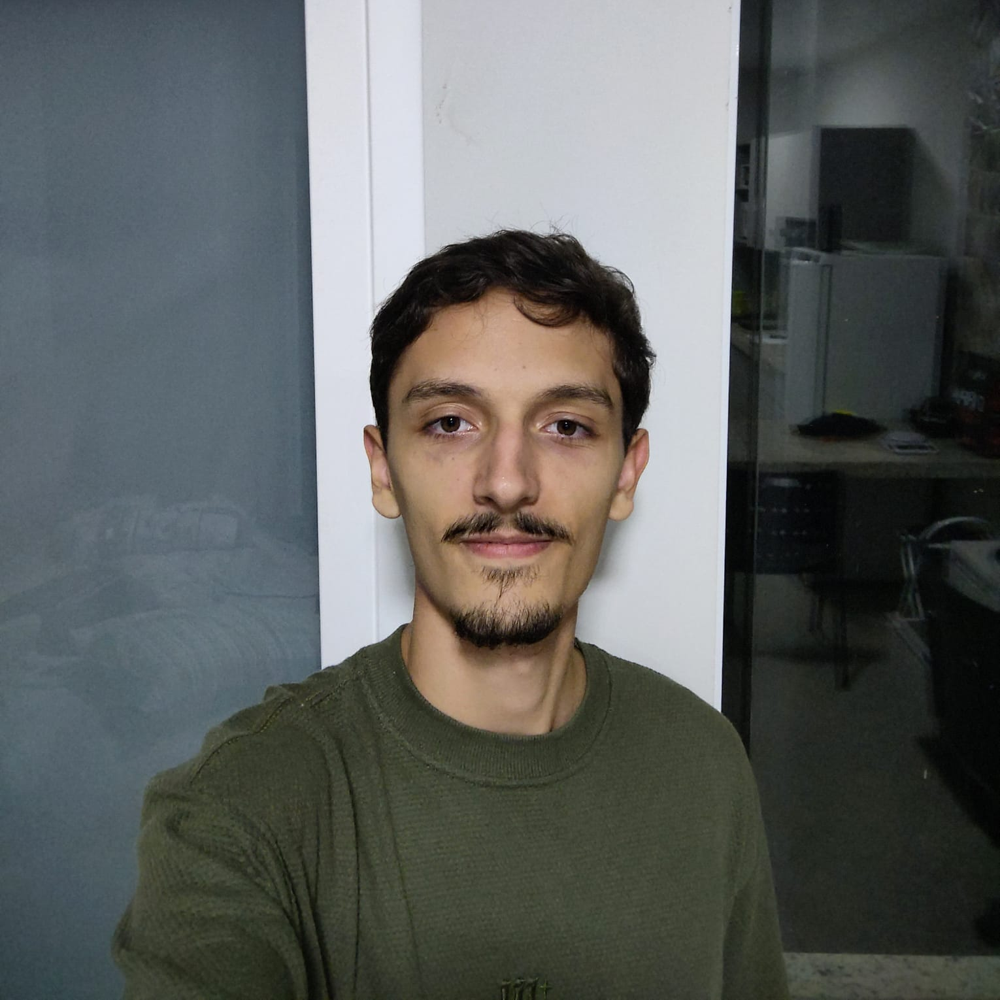

Foto de perfil
Desenvolvedor backend com foco em Java / Spring Boot. Atualmente construindo APIs RESTful para aprender mais sobre design de sistemas e soluções bem estruturadas de backend. Cursando Engenharia de Software na Universidade Tecnológica Federal do Paraná (UTFPR).